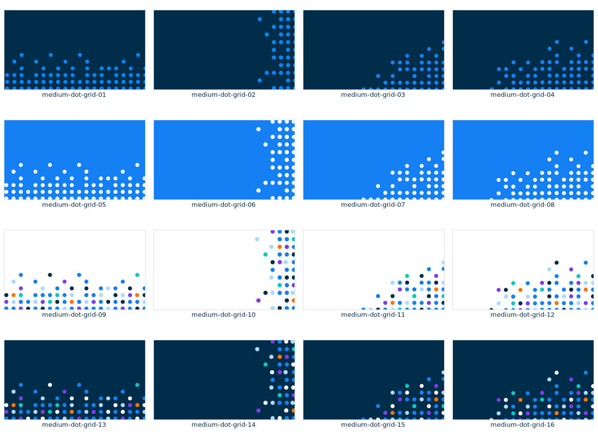
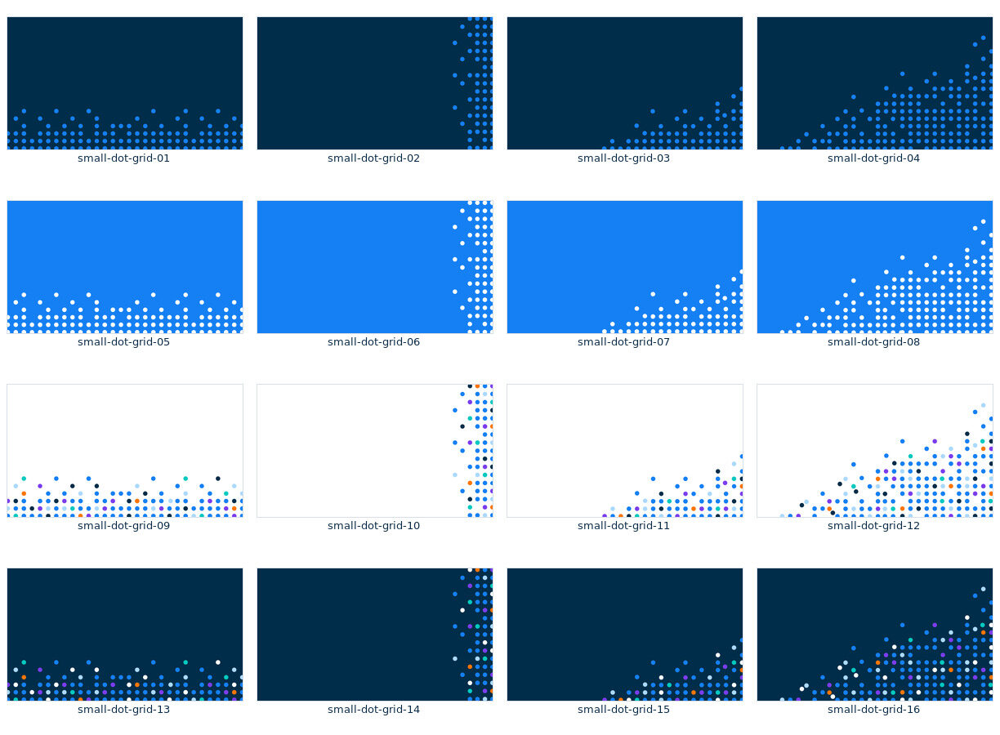

The dot grid is the third dot device, alongside the fluid dot pattern and the big dot. Identical dots sit on a fixed grid and step up from the bottom or right edge in uneven columns, like data resolving into order. It is quieter and more structured than the fluid dot pattern, which makes it a good fit for backgrounds, proof and stat pages (as on the ebook proof page), and supporting graphics.
The dot grid comes as 32 masters in the Graphic Devices library (Dot Grid folder): four layouts in four color versions, at two dot sizes, as SVG and PNG. Use a file as-is, or flipped; never hand-place dots, change their size or spacing, or recolor a master.

The same layouts and color versions with smaller, denser dots. Use the small grid where the medium grid would feel heavy, such as small formats or behind a busier layout.

| Files (medium and small) | Color version |
|---|---|
| 01–04 | Rhapsody Blue dots on navy |
| 05–08 | White dots on Rhapsody Blue |
| 09–12 | Multicolor on white (Rhapsody Blue, light blue, navy, teal, purple, a few orange) |
| 13–16 | Multicolor on navy |
Layouts, the same in every color version (the position in each row of four): 1, a full-width skyline along the bottom; 2, a column up the right edge; 3, a small cluster in the bottom-right corner; 4, a larger field rising diagonally to the bottom-right corner.
Masters: the Graphic Devices library on SharePoint (Dot Grid > Medium Dot Grid and Small Dot Grid, SVG and PNG). PNGs also in assets/graphic-devices/dot-grid/.